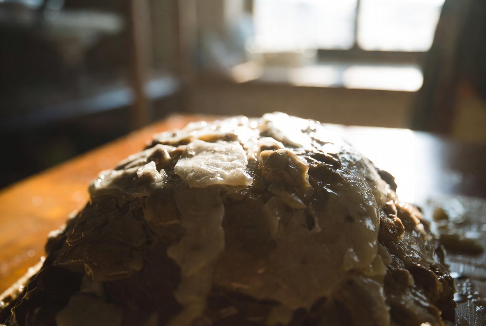
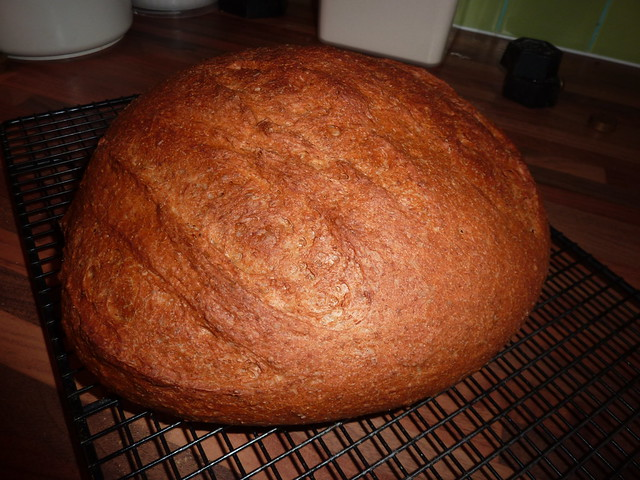

만들려던 빵 / 목표
목표는 변하지 않습니다. 기억 속 밤식빵의 속 촉촉함, 밤과 빵의 덩어리감. 2차에서 토핑 시점을 앞당겨 밀착이 부분적으로 나아졌고, 1차부터 이어진 다음 날 건조가 아직 남았습니다.
2025년 7월 18일 3차 실험입니다. 가설은 단순했습니다. 기능사 시험 때 쓰던 반죽은 규격·시간을 맞추기 위해 수분이 보수적이었고, R&D에서는 기억의 촉촉함에 더 가깝게 물만 소폭 더 넣어 본다는 것이었습니다.
2차의 토핑 시점·시럽 농도·굽기 조건은 그대로 두고, 밀가루 대비 물 비율만 시험용 반죽보다 +2%p 올렸습니다. 다른 재료 비율은 건드리지 않았습니다.
1차 일지에서 '다음 날 건조'가 기억과 가장 먼 항목이었습니다. 토핑을 더 손보기 전에, 속 빵 수분부터 맞춰 보자는 순서였습니다.
실패 1~3 — 눈에 보인 현상
- 당일 식감 — 2차와 큰 차이를 느끼기 어려움. 가족도 '비슷하다'고 함
- 성형 시 반죽이 2차보다 약간 느슨 — 봉합 시 주의 필요, 터짐은 없었음
- 밤 밀착·흘러내림 — 2차 수준 유지. 수분을 올렸다고 토핑 문제가 자동으로 해결되지는 않음
그러나 다음 날 아침에는 차이가 보였습니다. 2차 대비 속 빵이 덜 건조하고, 칼로 잘랐을 때 크럼이 더 부드럽게 느껴졌습니다. 기억 속 '식은 뒤에도 촉촉함'에 한 걸음 가까워졌지만, 아직 목표에는 못 미쳤습니다.

이번 실패 목록에 '당일 차이 없음'을 넣은 이유는, R&D에서 다음 날 식감까지 봐야 한다는 기록을 남기기 위해서입니다. 당일만 보면 3차가 실패처럼 보일 수 있습니다.
가족 피드백은 '2차랑 비슷한데, 아침에 먹으니 조금 부드럽다'였습니다. 제 기억과 비교하면 여전히 건조 쪽이지만, 2차 메모보다 한 줄 나아졌다고 적었습니다.
원인 추정 (추정 vs 확인)
추정 3 (1차): 시험용 반죽 수분이 낮아 다음 날 건조 — 부분 확인. +2%만으로 다음 날 식감이 소폭 개선. 더 올리면 어떨지는 미지수
당일 차이 미미: 수분 증가가 조직에 완전히 반영되려면 휴지·보관 시간이 필요 — 추정, 4차 보관 변수와 연결
성형 시 느슨함: 수분 +2%가 상한에 가까워지면 성형 텐션 관리 필요 — 추정, +3% 이상은 별도 실험 전까지 보류
확인된 것: 소폭 수분 증가는 다음 날 촉촉함에 긍정적일 수 있다. 확인 안 된 것: 최적 수분%, 토핑 밀착과의 상호작용.
3차는 '당일 실패·아침 부분 성공'처럼 읽히는 날이었습니다. R&D 일지에서 이런 날을 건너뛰지 않는 것이 중요합니다.
바꾼 변수 하나
바꾼 것은 반죽 수분(+2%p) 하나입니다. 기능사 시험 때 쓰던 같은 밀가루 기준, 물만 2%p 추가. 토핑은 2차와 같이 1차 발효 후, 시럽 2:1, 반죽 종료 24°C, 1차 발효 50분, 굽기 200/190°C 32분.

2025년 7월 18일 실내 26°C. 반죽이 2차보다 끈적여 성형 시 밀대 사용을 줄였습니다. 발효 판단은 손가락 눌림으로 동일 기준을 유지했습니다. 가루를 더 넣어 맞추지 않았습니다. 그날 반죽을 버리고 다시 하면 다른 변수가 섞이기 때문입니다.
다음 시도 계획
- 4차: 3차 반죽·토핑 유지 + 식힌 뒤 보관 방법만 비교 (실온 개방 vs 루즈 백)
- 수분을 더 올리는 실험은 4차 결과 본 뒤 판단
- 5차에서 시럽 졸임 시간 검토 예정
3차는 '다음 날 식감' 쪽에서 첫 긍정 신호였습니다. 보관이 그 차이를 키울지 줄일지는 4차에서 봅니다.

왜 +2%만 올렸는가
기능사 실기에서 반죽이 너무 wet하면 성형·발효가 무너지는 경험이 있었습니다. R&D에서도 한 번에 크게 올리면 토핑·굽기까지 연쇄로 망가질 수 있습니다. 6편에서 적었듯, 시험 반죽은 '맞추기'에 가깝고 R&D 반죽은 '기억에 맞추기'에 가깝습니다. 그 사이를 +2%로 좁혀 봤습니다.
2차 토핑 시점은 이번에도 유지했습니다. 수분과 시점을 동시에 바꾸면 2차에서 확인한 밀착 개선이 수분 탓인지 시점 탓인지 구분이 안 됩니다.
시험장에서는 반죽이 너무 wet하면 성형이 무너졌던 기억이 있어, R&D에서도 한 번에 크게 올리지 않았습니다. +2%p는 그 경험에서 나온 상한선에 가까웠습니다.
R&D 일지를 읽는 분께
시험 반죽에서 수분을 올려 보신 분이 있다면, 몇 %p에서 다음 날 식감이 달라졌는지 문의로 알려 주세요. 밀가루 종류·버터 비율에 따라 체감이 다릅니다.
1~2차를 건너뛰셨다면 읽기 순서 안내를 먼저 보시는 것을 권합니다.
실전 적용 노트
실험 당일 메모: 2025-07-18, 수분 +2%p, 반죽 종료 24°C, 토핑 1차 발효 후, 굽기 32분. 당일·다음 날 아침 단면 각각 촬영. 2차 사진과 나란히 놓고 비교.
수분을 올릴 때는 계량 컵 눈금보다 저울이 낫습니다. 2%p는 양이 작아 보이지만 1kg 반죽 기준으로는 체감이 됩니다. 메모에 '시험 반죽 대비 +2%p'라고만 적어 두면 나중에 원래 비율을 잊지 않습니다.
발행 2026-06-11, 실험 2025-07-18.
기억 속 밤식빵은 식은 뒤·다음 날에도 결이 살아 있었습니다. 3차는 그 기준에 처음으로 '조금'이라는 말을 붙일 수 있었던 실험입니다. 당일 사진만 보면 차이가 없어 보여도, 아침 단면을 남기는 습관이 다음 4차 보관 비교로 이어졌습니다.
1차 메모의 '다음 날 건조' 항목 옆에 3차 아침 관찰을 붙여 두었습니다. 차수가 달라도 같은 항목을 이어 쓰면 중간 정리 때 비교가 쉽습니다.
정리하며
3차는 눈에 띄는 성공 사진보다 다음 날 아침 메모에 의미가 있었습니다. 수분 +2%만으로 촉촉함이 소폭 나아졌고, 토핑·보관 변수는 그대로 남았습니다. 4차에서는 식힌 뒤 어떻게 두느냐를 비교합니다. 동기에서 시작한 밤식빵 프로젝트가 조금씩 숫자를 쌓고 있습니다. 읽어 주셔서 감사합니다.
초보자가 자주 실수하는 포인트
- 수분과 토핑·시럽을 동시에 바꿔 효과 출처를 모르게 만들기
- 당일 맛만 보고 다음 날 식감 기록을 생략하기
- 느슨해진 반죽에 가루를 더 넣어 그날의 수분 변수를 망치기
- +2% 개선을 보고 한 번에 +5%까지 올리기
체크리스트
- 2차와 토핑·시럽·굽기 동일 확인
- 수분만 +2%p 변경 메모
- 당일·다음 날 식감 각각 기록
- 성형 텐션 변화 관찰
자주 묻는 질문
- 수분 +2%가 정확히 얼마나 더 넣은 건가요?
- 기능사 시험 때 쓰던 같은 밀가루 기준, 물 비율만 2%p 올렸습니다. 그램으로는 반죽 총량에 따라 달라져 일지에는 %p로만 적었습니다.
- 당일은 비슷한데 왜 다음 날만 달랐나요?
- 수분이 조직에 스며들고 수분 분배가 안정되려면 휴지·보관 시간이 필요하다고 봤습니다. 그래서 4차에서 보관 방법도 따로 비교했습니다.
이 글은 운영자의 직접 경험을 바탕으로 작성되었으며, 오븐·재료·환경에 따라 결과는 달라질 수 있습니다. 식품 위생·알레르기 등 건강 관련 판단을 대체하지 않습니다.